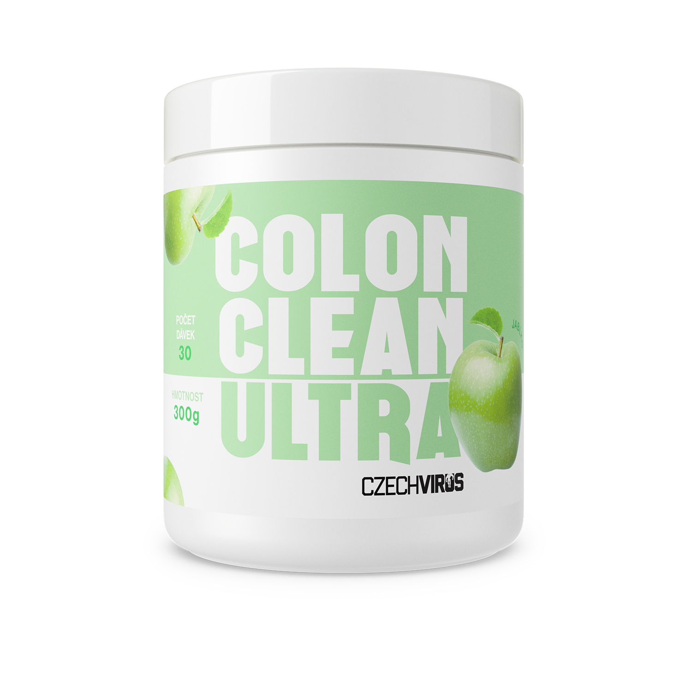
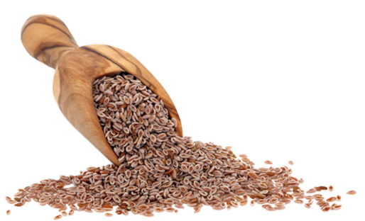
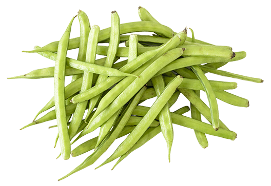
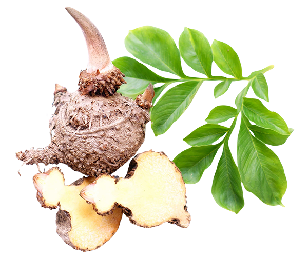
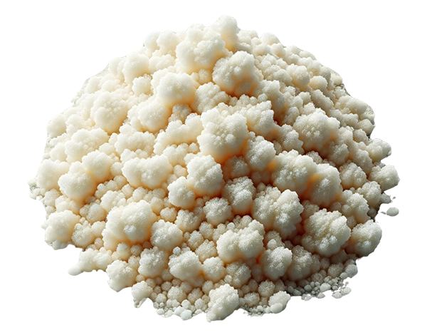
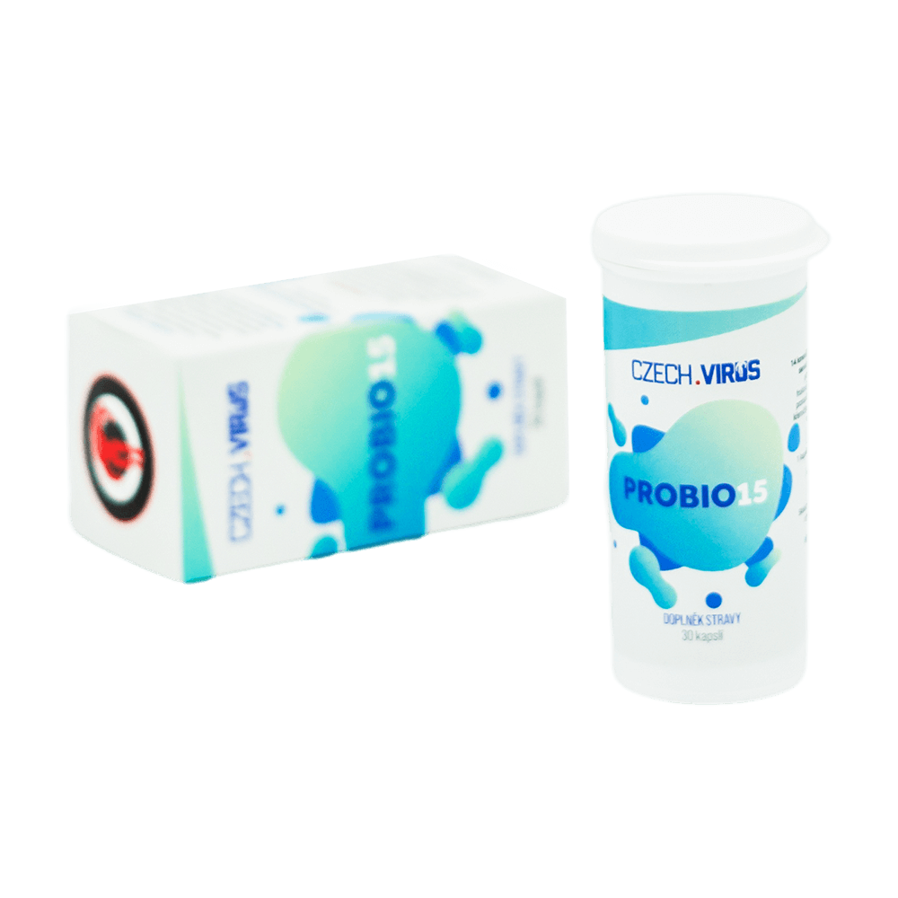

Péče o střeva zevnitř
Vláknina je nezbytná složka nejen pro tvé zdravé fungování střev, ale i celkovou funkci imunitního systému. Průzkumy ukazují, že Česká a Slovenská republika patří ke státům s rizikovým výskytem střevních onemocnění právě kvůli nedostatku vlákniny.
ColonClean Ultra je odpovědí na tento problém – klíč k lepšímu trávení a celkovému zdraví v jedné praktické dávce.
💡 Tip: Doporučujeme kombinovat s SuperGreens PRO V2.0 pro maximální podporu tvého zdraví.

Základní pilíř zdraví
Vláknina je důležitá pro správnou funkci střev. Dostatečný příjem vlákniny je prevencí nebo úlevou při zácpě. Podporuje také zdravý střevní mikrobiom a ovlivňuje pravidelný pohyb střev.
Nedostatečný příjem vlákniny zvyšuje riziko výskytu nádorů ve střevech. Řada studií potvrzuje významný protinádorový účinek vlákniny.
Pečlivě vybrané složky

Rozpustná vláknina z jitrocele indického. Absorbuje vodu a vytváří gelovitou hmotu, která podporuje trávení a zlepšuje konzistenci stolice.

Částečně hydrolyzovaná guarová vláknina. Podporuje zdraví střevní mikroflóry a pomáhá v regulaci hladiny cukru v krvi.

Vláknina z kořene rostliny konjac. Absorbuje velké množství vody, čímž zvyšuje pocit sytosti a podporuje zdravé hubnutí.
Rozpustná vláknina z kořene čekanky. Funguje jako prebiotikum – podporuje růst prospěšných bakterií ve střevech.

Rozpustná vláknina podporující růst prospěšných střevních bakterií. Pomáhá v regulaci hladiny cukru v krvi a cholesterolu, zvyšuje pocit sytosti.
Živé kultury pro tvá střeva

Dva kmeny v ColonClean Ultra jsou základem. Pro maximální pestrost doporučujeme Probio15 s 15 kmeny.
Komplexní péče
ColonClean Ultra je směs 5 pečlivě vybraných vláknin a dvou probiotik pro podporu tvého zdraví zevnitř. Tato směs je zaměřena primárně na střeva, ale přináší celou řadu zdravotních benefitů.
Může pomoci zejména s trávením, pomáhá posilovat imunitní systém a podporuje zdravé hubnutí.